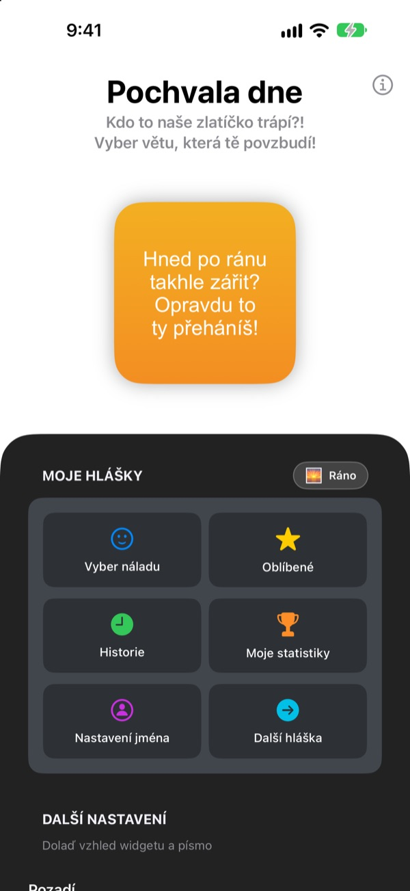
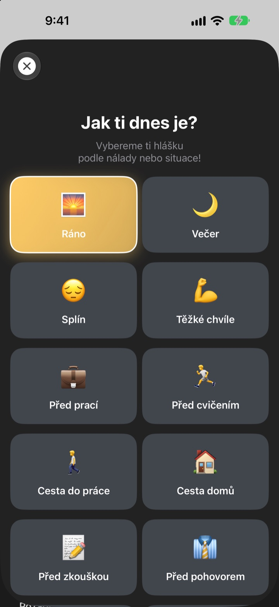
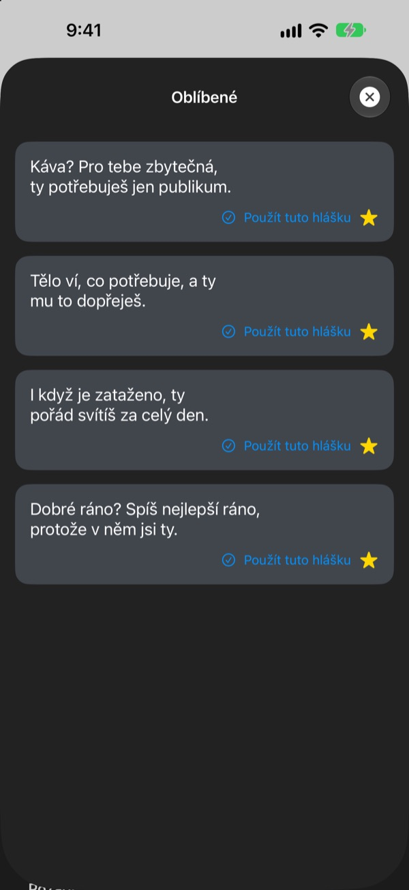
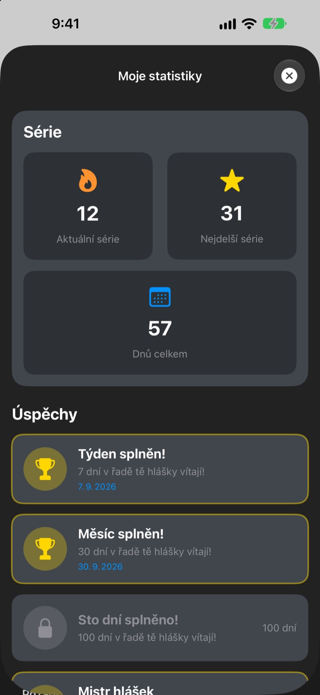

Pokaždé, když vezmete telefon,
čeká na vás váš největší fanoušek
Pochvala dne je widget, který vás schválně chválí až moc. Ráno ranní hláška, před pohovorem hláška na pohovor. Písmo, barvy i pozadí si nastavíte podle sebe.
Jeden nákup a máte všechno. Žádné předplatné ani reklamy.

Nechte se pochválit hned teď
Vyberte náladu a widget ukáže hlášku, která k ní sedí. Klepněte na Další hláška a vylosuje se jedna z 281.
Kdo je váš nejpřísnější kritik? Nejste to vy?
Cestou do práce, před pohovorem, cestou domů hlas v hlavě hlavně remcá. Pochvala dne se několikrát denně postaví na vaši stranu přímo z plochy, a trochu víc, než by bylo rozumné. Ve chvíli, kdy se pousmějete, se vrátí i kus sebevědomí.
Hláška podle nálady
Vyberte ze 14 nálad a situací jako Ráno, Cesta do práce, Těžké chvíle, Před pohovorem nebo Před rande a odpovídající hláška se hned objeví na widgetu. Nevíte? Je tu i Náhodně.

Oblíbené si nechte
Klepnutím na hvězdičku uložíte hlášku do Oblíbených a starší najdete v Historii. Klepněte na Použít tuto hlášku a hned je na widgetu.

Chodíte denně a počítá se to
Každý den, kdy se podíváte, prodlouží vaši sérii. Za 7, 30 nebo 100 dní v řadě a za 50 a 100 dní celkem se odemkne úspěch.

Začnete ve třech krocích
- 1
Vyberte náladu
Otevřete
Vyber náladua klepněte na tu, která sedí. - 2
Upravte widget
V dalším nastavení zvolte písmo, barvu písma, pozadí a interval obnovy.
- 3
Přidejte ho na plochu
Podržte prst na ploše, klepněte na + a najděte Pochvalu dne.
Widget podle vás
- Písmo
- 13 písem, mezi nimi Futura, Georgia a Marker Felt
- Barva písma
- Jakákoli, která se vám líbí
- Pozadí
- Přechod dvou barev, nebo jedna z vestavěných fotek
- Zarovnání
- Vlevo, na střed nebo vpravo
- Řádkování
- Řádky hustší nebo volnější
- Interval obnovy
- Nová hláška každých 5, 15 nebo 30 minut
Velikost widgetu vyberete, když ho přidáváte na plochu.
Koupíte jednou a hotovo
Aplikace
- 281 hlášek pro 14 nálad
- Widget na plochu podle vašeho gusta
- Oblíbené a Historie
- Série a úspěchy
Podpořte vývojáře
- Vyberte malé, střední nebo velké spropitné
- Nic se tím neodemyká. Je to jen poděkování
Jen pokud a kdy budete chtít.
Žádné předplatné, žádné další nákupy, žádné reklamy.
Časté otázky
Jak přidám widget?
Podržte prst na prázdném místě plochy, dokud se ikony nerozkývou, klepněte nahoře na +, vyhledejte Pochvalu dne a vyberte velikost.
Jak se vybírá další hláška?
Když vyberete náladu, hláška k ní se hned objeví na widgetu. Potom widget v nastaveném intervalu ukazuje náhodnou hlášku ze všech 281. V aplikaci můžete klepnout na Další hláška a přepnout sami.
Dá se změnit písmo nebo interval obnovy?
Ano. V dalším nastavení změníte písmo, barvu písma, pozadí, zarovnání, řádkování a interval obnovy: 5, 15 nebo 30 minut.
Widget se nezměnil hned.
Kdy se widget překreslí, rozhoduje iOS, takže se občas trochu opozdí za zvoleným intervalem. Otevřete aplikaci a zavřete ji a widget se aktualizuje.
Jak funguje série?
Každý den v řadě, kdy se podíváte na hlášku, přidá den do série. V Moje statistiky uvidíte aktuální sérii, rekord, celkový počet dní a úspěchy.
Zmizely mi oblíbené a historie.
Všechno se ukládá jen do vašeho zařízení, takže se to nepřenese, když aplikaci smažete nebo vyměníte telefon. Pokud jste nic nemazali a stejně to zmizelo, napište nám e-mail.
Posílají se moje data někam?
Ne. Aplikace nesbírá žádné osobní údaje. Oblíbené i historie zůstávají ve vašem zařízení.
Jak nahlásit chybu nebo navrhnout nápad?
Přímo přes Napsat vývojáři v aplikaci, e-mailem nebo přes DM na Instagramu @lee25_ios. Odpovíme, jakmile to uvidíme.
Dotazy nebo nápady? Napište na leeo@kakao.com.